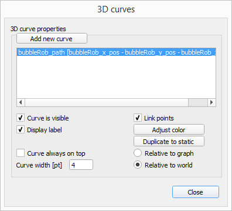

weeks <<
Previous Next >> week6 ~ 9
week1 ~ week5
week1
建立個人倉儲及網站編譯
week2
升級python3.8.2
1.先新增data資料夾，在data下新增資料夾py382、wscite432、portablegitwscite432、portablegit。
2.到https://www.python.org/downloads/release/python-382/ 下載Windows x86 web-based installer。
3.開始下載，必須將pip選項取消，接著按下next並將檔案下載至資料夾py382。
4.到https://www.scintilla.org/SciTEDownload.html 下載full 64-bit download ，下載完成後解壓縮到資料夾wscite432。
5.建立新的start.bat及stop.bat。(下方)
6.下載MSYS2 msys2-x86_64-20190524.exe 至data下。
7.到https://bootstrap.pypa.io/get-pip.py頁面，滑鼠右鍵另存新檔到data下。
8.輸入指令
python get-pip.pypip install flask bs4 lxml pelican markdown flask_cors leo
9.git clone自己的倉儲
start.bat

stop.bat

第三組第一次小組會議:
會議內容:討論工作內容
作業1:
1.請描述如何針對該課程進行有效的隨機分組，或者隨機進行點名？
2.描述如何為Windows 10 64位系統準備一個可移植的Python編程系統，以允許在Github上維護CMSiMDE網站，Pelican博客和js演示文稿？
3.您需要從http://www.coppeliarobotics.com/helpFiles/index.html了解什麼來實現四輪機器人？
工作分配圖
注意事項:
1.3/26(四)之前要做完，做成pdf檔繳交。
2.有問題到gitter上提問。
3.每週要更新上傳。
week3
工作任務:您需要從http://www.coppeliarobotics.com/helpFiles/index.html了解什麼來實現四輪機器人？
分配到翻譯章節:BubbleRob tutorial

我們使用[菜單欄->添加->基本形狀->球體]將直徑為0.2的基本球體添加到場景中。我們將X尺寸項目調整為0.2，然後點擊“確定”。默認情況下，創建的球體將顯示在可見性層1中，並且是動態且可響應的（因為我們已啟用“創建動態且可響應的形狀”項）。我們開始模擬，複製並貼上創建的球體（使用[菜單欄->編輯->複製所選對象]，然後[菜單欄->編輯->黏貼緩衝區]，這兩個球將對碰撞做出反應並滾動。
我們在“平移”選項卡上打開“位置”對話框，選擇表示BubbleRob身體的球體，並為“沿Z”輸入0.02。確保將“相對於”項設置為“世界”。然後我們點擊翻譯選擇。這會將所有選定對象沿絕對Z軸平移2 cm，並有效地將我們的球體抬高了一點。在場景層次結構中，我們雙擊球體的名稱，以便我們可以編輯其名稱。我們輸入bubbleRob，然後按Enter。
接下來，我們將添加一個接近傳感器，以便BubbleRob知道它何時接近障礙物：我們選擇[菜單欄->添加->接近傳感器->圓錐類型]。在“方向”選項卡上的“方向”對話框中，我們為“周圍的Y”和“周圍的Z”輸入90，然後點擊“旋轉選擇”。在位置對話框的“位置”選項卡上，為X坐標輸入0.1。 Z坐標為0.12。現在，接近傳感器已相對於BubbleRob的身體正確定位。我們在場景層次中點擊接近傳感器的圖標以打開其屬性對話框。我們點擊顯示體積參數以打開接近傳感器體積對話框。我們將偏移量調整為0.005，角度調整為30，範圍調整為0.15。然後在接近傳感器屬性中，點擊“顯示檢測參數”。這將打開接近傳感器檢測參數對話框。如果距離小於則取消選中“不允許檢測”項，然後再次關閉該對話框。在場景層次結構中，我們點擊接近傳感器的名稱，以便我們可以編輯其名稱。我們輸入bubbleRob_sensingNose並按返回鍵。
我們選擇bubbleRob_sensingNose，然後按住Control鍵選擇bubbleRob，然後點擊[菜單欄->編輯->將上一個選定的對象設為父對象]。這會將傳感器連接到機器人的身體。我們還可以將bubbleRob_sensingNose拖動到場景層次中的bubbleRob上。

接下來，我們將製作BubbleRob的車輪。我們使用[菜單欄->文件->新場景]創建一個新場景。跨多個場景工作通常非常方便，以便可視化並僅對特定元素進行工作。我們添加一個尺寸為（0.08,0.08,0.02）的純原始圓柱體。對於BubbleRob的主體，如果尚未啟用，則在該圓柱的對象通用屬性中啟用Collidable，Measurable，Renderable和Detectable。然後，將圓柱的絕對位置設置為（0.05,0.1,0.04），並將其絕對方向設置為（-90,0,0）。我們將名稱更改為bubbleRob_leftWheel。我們複製並貼上滾輪，然後將複製的絕對Y坐標設置為-0.1。我們將副本重命名為bubbleRob_rightWheel。我們選擇兩個輪子，複製它們，然後切換回場景1，然後貼上輪子。
現在，我們需要為車輪添加接頭（或電動機）。我們單擊[菜單欄->添加->關節->旋轉]將旋轉關節添加到場景。在大多數情況下，將新對象添加到場景時，該對象將出現在世界的起源處。我們保持關節處於選中狀態，然後控制選擇bubbleRob_leftWheel。在位置對話框的“位置”選項卡上，我們單擊“應用於”選擇按鈕：這將關節定位在左輪的中心。然後，在“方向”對話框中的“方向”選項卡上，執行相同的操作：這將關節與左輪定向的方向相同。我們將關節重命名為bubbleRob_leftMotor。現在，我們在場景層次中雙擊關節的圖標以打開關節屬性對話框。然後，單擊“顯示動態參數”以打開關節動力學屬性對話框。我們啟用電動機，然後選中目標速度為零時鎖定電動機。現在，我們對右馬達重複相同的過程，並將其重命名為bubbleRob_rightMotor。現在，我們將左輪連接到左馬達，將右輪連接到右馬達，然後將兩個馬達連接到bubbleRob。
我們運行模擬，並注意到機器人向後倒下。我們仍然缺少與地板的第三個聯繫點。現在，我們添加一個小的滑塊（或腳輪）。在一個新場景中，我們添加一個直徑為0.05的純原始球體，並使該球體可碰撞，可測量，可渲染和可檢測（如果尚未啟用），然後將其重命名為bubbleRob_slider。我們在形狀動力學屬性中將Material設置為noFrictionMaterial。為了將滑塊與機器人的其餘部分牢固地鏈接在一起，我們使用[菜單欄->添加->力傳感器]添加了力傳感器對象。我們將其重命名為bubbleRob_connection並將其上移0.05。我們將滑塊連接到力傳感器，然後復制兩個對象，切換回場景1並貼上它們。然後，我們將力傳感器沿絕對X軸移動-0.07，然後將其安裝到機器人主體上。如果現在運行仿真，我們會注意到滑塊相對於機器人主體略微移動，這是因為兩個對象彼此碰撞。為了避免在動力學模擬過程中產生奇怪的影響，我們必須通知CoppeliaSim兩個對像不會相互碰撞，我們可以通過以下方式進行此操作，在形狀動力學屬性中，對於bubbleRob_slider，我們將本地可響應蒙版設置為00001111，對於bubbleRob，我們將本地可響應掩碼設置為11110000。再次運行仿真，我們會注意到兩個對像不再相互干擾。

我們再次運行仿真，發現即使在電機鎖定的情況下，BubbleRob也會輕微移動。我們還嘗試使用不同的物理引擎運行仿真，結果將有所不同。動態仿真的穩定性與所涉及的非靜態形狀的質量和慣性緊密相關。現在，我們嘗試糾正這種不良影響。我們選擇兩個輪子和滑塊，然後在“形狀動力學”對話框中點擊3次M = M * 2（用於選擇）。效果是所有選定形狀的質量都將乘以8。我們對3個選定形狀的慣性進行相同的操作，然後再次運行仿真：穩定性得到了改善。在關節動力學對話框中，我們將兩個電機的目標速度都設置為50。我們運行模擬，BubbleRob現在向前移動並最終掉落在地板上。我們將兩個電機的目標速度項都重置為零。
對象bubbleRob是所有對象的基礎，所有對象隨後將形成BubbleRob模型。我們將在稍後定義模型。同時，我們要定義代表BubbleRob的對象的集合。為此，我們定義了一個收集對象。我們單擊[菜單欄->工具->集合]以打開集合對話框。

在集合對話框中，點擊添加新集合。一個新的集合對像出現在下面的列表中。目前，新添加的集合仍為空（未定義）。在列表中選擇新的收藏項時，在場景層次中選擇bubbleRob，然後在收藏對話框中點擊“添加”。現在，我們的集合被定義為包含層次結構樹的所有對象（從bubbleRob對像開始）（集合的組成顯示在“組成元素和屬性”部分中）。要編輯集合名稱，請點擊它，然後將其重命名為bubbleRob_collection。
在此階段，我們希望能夠跟踪BubbleRob與任何其他對象之間的最小距離。為此，我們使用[菜單欄->工具->計算模塊屬性]打開距離對話框。

在距離對話框中，點擊“添加新距離對象”並選擇一個距離對 bubbleRob_collection-場景中所有其他可測量對象。這只是添加了一個距離對象，該距離對象將測量集合bubbleRob_collection（即該集合中的任何可測量對象）與場景中任何其他可測量對象之間的最小距離。我們通過點擊其名稱將距離對象重命名為bubbleRob_distance。我們關閉距離對話框。現在，當我們運行模擬時，我們不會看到任何區別，因為距離對象將嘗試測量（並顯示）BubbleRob與場景中任何其他可測量對象之間的最小距離段。
接下來，我們將向BubbleRob添加一個圖形對象，以顯示最小距離以上的距離，同時還顯示BubbleRob隨時間的軌跡。我們點擊[菜單欄->添加->圖]，並將其重命名為bubbleRob_graph。我們將圖形附加到bubbleRob，並將圖形的絕對坐標設置為（0,0,0.005）。現在，通過在場景層次結構中雙擊其圖標來打開圖形屬性對話框。我們取消選中“顯示XYZ平面”，然後點擊“添加新數據流以進行記錄”，然後選擇“對象：數據流類型的絕對x位置”，並選擇“ bubbleRob_graph”作為要記錄的對象/項目。數據流記錄列表中出現了一個項目。該項目是bubbleRob_graph的絕對x坐標的數據流。現在，我們還想記錄y和z位置：我們以與上述類似的方式添加這些數據流。現在，我們有3個數據流，分別表示BubbleRob的x，y和z軌跡。我們將再添加一個數據流，以便能夠跟踪機器人與其環境之間的最小距離，點擊添加新數據流以進行記錄，然後選擇“距離，數據流類型的段長度”和“氣泡Rob_distance”作為要記錄的對象/項目。在數據流記錄列表中，我們現在將Data重命名為bubbleRob_x_pos，將Data0重命名為bubbleRob_y_pos，將Data1重命名為bubbleRob_z_pos，將Data2重命名為bubbleRob_obstacle_dist。
我們在“數據流”記錄列表中和“時間圖屬性”部分中選擇bubbleRob_x_pos，取消選中“可見”。我們對bubbleRob_y_pos和bubbleRob_z_pos都執行相同的操作。這樣，在時間圖中只能看到bubbleRob_obstacle_dist數據流。

接下來，我們將建立一個顯示BubbleRob軌蹟的3D曲線，點擊“編輯3D曲線”以打開XY圖形和3D曲線對話框，然後點擊“添加新曲線”。在彈出的對話框中，我們為X值項目選擇bubbleRob_x_pos，為Y值項目選擇bubbleRob_y_pos，為Z值項目選擇bubbleRob_z_pos。我們將新添加的曲線從Curve重命名為bubbleRob_path。最後，我們檢查“相對於世界”項目並將“曲線寬度”設置為4。

我們關閉與圖有關的所有對話框。現在我們將一個電機目標速度設置為50，運行模擬，然後將看到BubbleRob的軌跡顯示在場景中。然後，我們停止仿真並將電動機目標速度重置為零。
我們添加具有以下尺寸的純原始圓柱體（0.1，0.1，0.2）。我們希望此圓柱體是靜態的，但仍會對非靜態的可響應形狀施加一些碰撞響應。為此，我們在形狀動力學屬性中禁用“主體是動態的”。我們還希望圓柱體是可碰撞的，可測量的，可渲染的和可檢測的。我們在對象的公共屬性中執行此操作。現在，在仍然選擇圓柱體的情況下，我們點擊對象平移工具欄按鈕。

現在我們可以拖動場景中的任何點，圓柱體將跟隨運動。同時始終受約束以保持相同的Z坐標。我們複製並貼上圓柱幾次，然後將它們移動到BubbleRob周圍的位置。在對象移動期間，按住Shift鍵可以執行較小的移動步驟。按住ctrl鍵可以在與常規方向正交的方向上移動。完成後，再次選擇相機平移工具欄按鈕。

我們將左馬達的目標速度設置為50並運行模擬。現在，圖形視圖顯示了到最近障礙物的距離，並且該距離段在場景中也可見。我們停止模擬並將目標速度重置為零。
現在，我們需要完成BubbleRob作為模型定義。我們選擇模型基礎（即對象bubbleRob），然後選中"對像是模型基礎''，然後選擇`"對象/模型可以轉移或接受對象共同屬性中的DNA''，現在有一個點畫的邊界框包含模型層次結構中的所有對象。我們選擇兩個關節，即接近傳感器和圖形，然後啟用項目“不顯示為內部模型選擇”，然後在同一對話框中點擊“應用於選擇”，模型邊界框現在將忽略兩個關節和接近傳感器。仍在同一對話框中，我們禁用攝像機可見性層，並為兩個關節和力傳感器啟用攝像機可見性層，這有效地隱藏了兩個關節和力傳感器。我們可以隨時修改整個場景的可見性層。要完成模型定義，我們選擇視覺傳感器，兩個輪子，滑塊和圖形，然後啟用“選擇模型基礎”選項：如果現在嘗試在場景中選擇模型中的對象，則整個模型而是選擇，這是一種將單個模型處理和操縱整個模型的便捷方法。此外，這可以防止模型受到意外修改。仍然可以通過在按住Shift的同時點擊選擇對像或在場景層次結構中正常選擇它們，來在場景中選擇模型中的單個對象。最後，我們將模型樹折疊到場景層次中。

接下來，我們將在與BubbleRob接近傳感器相同的位置和方向上添加視覺傳感器。我們再次打開模型層次結構，然後點擊[菜單欄->添加->視覺傳感器->透視類型]，然後將視覺傳感器連接到接近傳感器，並將視覺傳感器的本地位置和方向設置為（0,0,0）。我們還確保視覺傳感器不可見，不是模型邊界框的一部分，並且點擊該模型，則會選擇模型。為了自定義視覺傳感器，我們打開其屬性對話框。將“遠裁剪平面”項設置為1，將“分辨率x”和“分辨率y”項設置為256和256。向場景中添加一個浮動視圖，並在新添加的浮動視圖上，點擊[彈出菜單->視圖->將視圖與選定的視覺傳感器關聯]。
通過點擊[菜單欄->添加->關聯的子腳本->非線程]，將非線程子腳本附加到視覺傳感器。我們點擊場景層次結構中視覺傳感器旁邊出現的小圖標，這將打開我們剛剛添加的子腳本。我們將以下代碼複製並粘貼到腳本編輯器中，然後將其關閉。
為了能夠看到視覺傳感器的圖像，我們開始模擬，然後再次停止。
我們場景所需的最後一件事是一個小的子腳本，它將控制BubbleRob的行為。我們選擇bubbleRob並點擊[菜單欄->添加->關聯的子腳本->非線程]。我們點擊場景層次結構中bubbleRob名稱旁邊顯示的腳本圖標，然後將以下代碼複製並粘貼到腳本編輯器中，然後將其關閉。
我們運行模擬。 BubbleRob現在在嘗試避開障礙物的同時向前移動（以非常基本的方式）。在模擬仍在運行時，更改BubbleRob的速度，然後將其複制/貼上幾次。在模擬仍在運行時，也嘗試擴展其中的一些。請注意，根據環境的不同，最小距離計算功能可能會嚴重降低仿真速度。您可以通過選中/取消選中“啟用所有距離計算”項來在“距離”對話框中打開和關閉該功能。
weeks <<
Previous Next >> week6 ~ 9